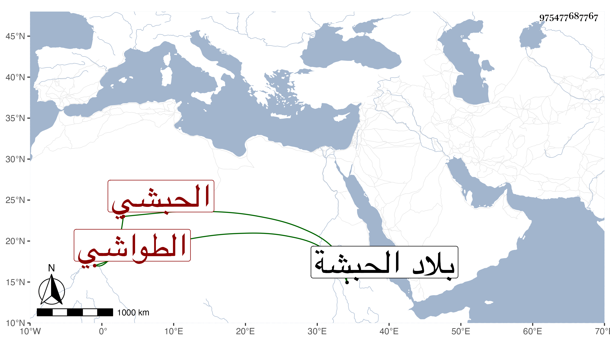

0902Sakhawi.DawLamic.ITO20230111-ara1.EIS1600.975477687767
Biography ID: 975477687767
11
بدر الحبشي مولى سابق الدين مثقال الطواشي . كان بوابا لمدرسته بالقصر وفيه خير وديانة ، مات بعد سنة ثمانمائة ذكره المقريزي في عقوده وانه اخبره انه من ولد بعض اجناد الحطي متملك الحبشة وانهم كانوا إذا توقف نزول المطر ببلادهم من وقته احضر الحطي طائفة معروفين بينهم فيأمرهم ان ينزلوا المطر فان امتنعوا عاقبهم إلى ان يقع المطر وعندهم ان هذه الطائفة تسحر المطر حتى لا ينزل وانه شاهد هناك حية تنتصب بأعلى الجبل وتمتد محنية فتصير على قدر قوس قزح وانه شاهد شجرة يستظل بها مائتا فارس وقال انه ثقة صدوق شديد في الله يوثق بقوله وامانته صحبناه سنين .
